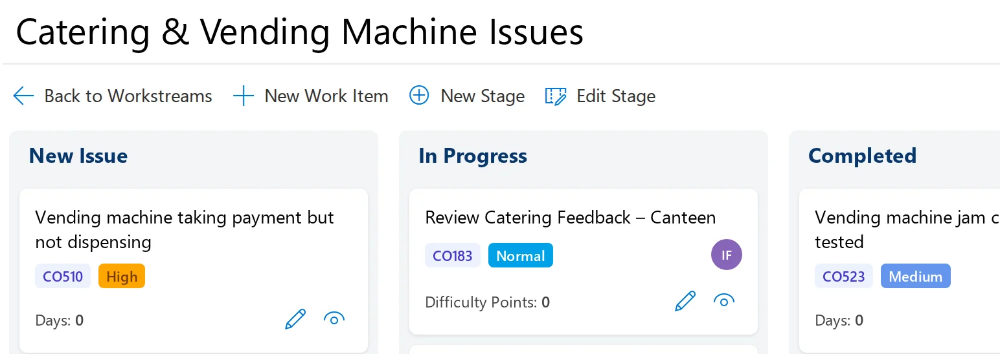
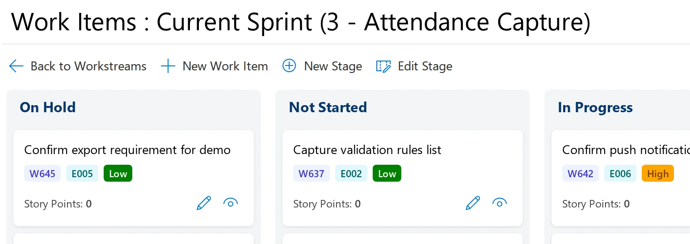
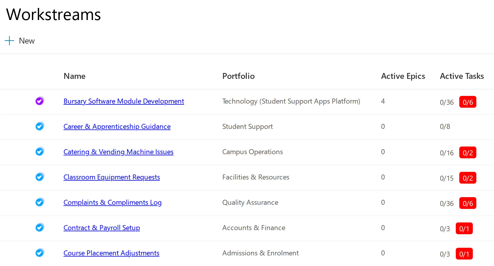
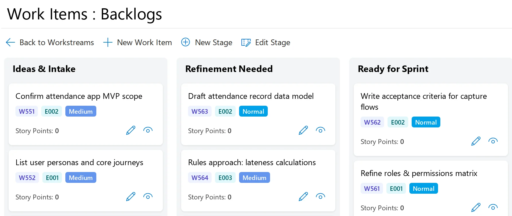

This brochure is a work in progress. The content is not complete and may not be correct.
Workflows for everyday work. Sprints for planned delivery.
Group WorkStreams puts each stream of incoming work, such as complaints or HR requests, on its own Kanban board. Agile Sprints is for Scrum teams that plan their work in a backlog and deliver it in sprints.


An independent promoter of ZedX produced this brochure. ZedX is made by Swiftpro Corporation Ltd. The screens come from the ZedX demo, which uses sample data for a college group.
Group WorkStreams gives each kind of work its own board
Complaints, catering faults, HR requests and finance queries can each become a workstream. Every workstream has its own Kanban board, with stages set for that work.

It suits operational, administrative and service teams with a steady flow of requests and cases, and needs no project plan or sprints. You add and change stages on each board with the New Stage and Edit Stage buttons. In the demo, the complaints log has five stages and catering issues have three. A workstream can also be shown as a simple list or a timeline.
The workstreams list shows who owns each workstream and how many tasks are active. Dashboards show workload, progress and bottlenecks across workstreams, and how many items are critical.
Teams that also run sprints can use Agile Sprints alongside it, so sprint work and operational work stay apart. When work in a workstream needs sprints, the workstream can be linked to Agile Sprints without entering the data twice. A project in Project Portfolios can link its workstreams to Group WorkStreams, and leaders then follow progress through the project’s structured updates.
Education providers can use it with ZedX Study Planner, an app for students that connects to Group WorkStreams, so tutors and students can plan coursework together.
Group WorkStreams and Agile Sprints · independent promotional brochure · page 2
Agile Sprints takes Scrum teams from backlog to release
Epics and user stories wait in a prioritised backlog. The team estimates each story in story points and pulls stories into a sprint up to its capacity.

Agile Sprints is for delivery teams that plan their work before they start. Everyone can see the scope and the sprint goal before the sprint begins.
During the sprint, a board with stages you can configure shows what is in progress, finished or blocked. Agile Sprints supports daily stand-ups and sprint reviews, and stand-ups can be reported online.
Releases can span several sprints, and each story can be assigned to a planned release version. After each sprint the team can review completion, velocity and carried-over work, with trends across sprints.
It works on its own or linked to Project Portfolios. Leaders then see sprint progress in periodic updates, and the tasks themselves stay with the team.
Group WorkStreams and Agile Sprints · independent promotional brochure · page 3
Which app fits your work?
| Group WorkStreams | Agile Sprints | |
|---|---|---|
| How work arrives | All the time, as requests, cases, issues and jobs. | As epics and user stories in a prioritised backlog, planned in advance. |
| How it is planned | There is no fixed cycle. Items move through the workstream’s stages as people handle them. | In sprints. The team estimates stories in story points and fills each sprint up to its capacity. |
| How progress is reviewed | On dashboards of workload, progress and bottlenecks across workstreams, including how many items are critical. | In daily stand-ups and sprint reviews, using completion, velocity and carried-over work. |
Leaders follow progress in Project Portfolios
Project managers send a structured update at agreed intervals, such as monthly or quarterly. Each one rates delivery confidence red, amber or green and adds a progress note, achievements, blockers, risks, dependencies and any support needed. Dashboards show delivery health across portfolios, programmes and projects. When a project links to either app, Project Portfolios gets a summary of its progress in each update. The tasks stay on the team’s board.
Sign-in, hosting and licensing
- Sign-in and access
- Single sign-on with Microsoft Entra ID. Permissions follow your organisation’s structure. Teams work in their own areas, and authorised users can see across departments.
- Editions
- Home, Professional, Group, Corporate and Enterprise. SaaS editions are licensed per user. Enterprise, for government, education and larger organisations, has unlimited users. Ask Swiftpro for prices.
- Hosting and integration
- Enterprise can run in your own Microsoft Azure account and connect to the systems and data sources you already use.
- Try it yourself
- The ZedX demo at demo.zedx.net is open to everyone, without registering. Swiftpro also offers a free trial with no credit card needed.
Use the contact form at zedxapps.com. Your request goes to Swiftpro, the company that makes ZedX, and they’ll get back to you. Customers log in at zedx.net.
Independent promotional brochure, October 2026, work in progress. ZedX, ZedX Apps, Group WorkStreams, Agile Sprints and Project Portfolios are products of Swiftpro Corporation Ltd, London. Product details come from zedxapps.com and the screens from the ZedX demo. Website: hamzaanjum96.github.io/ZedX